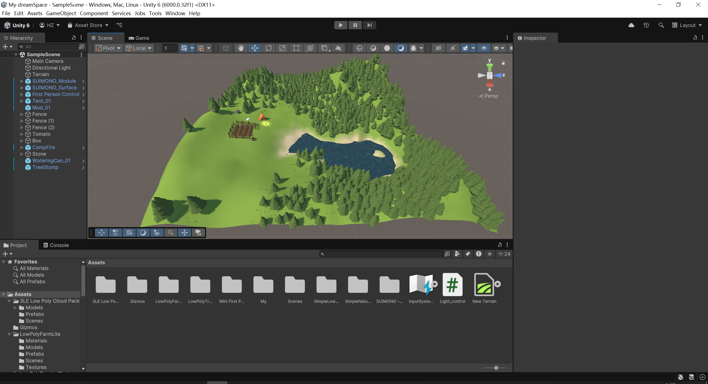
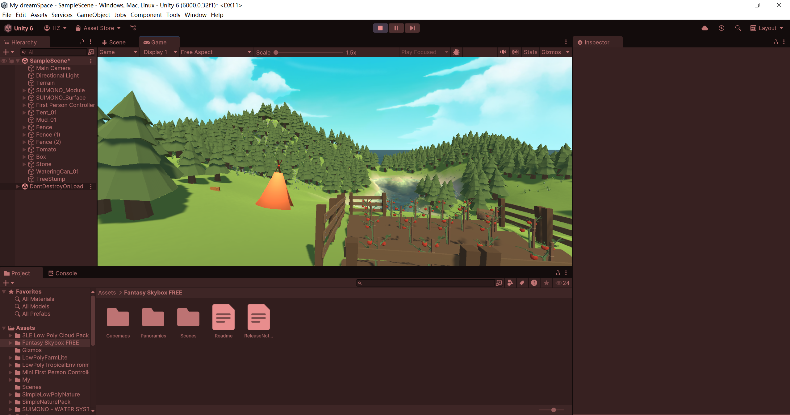
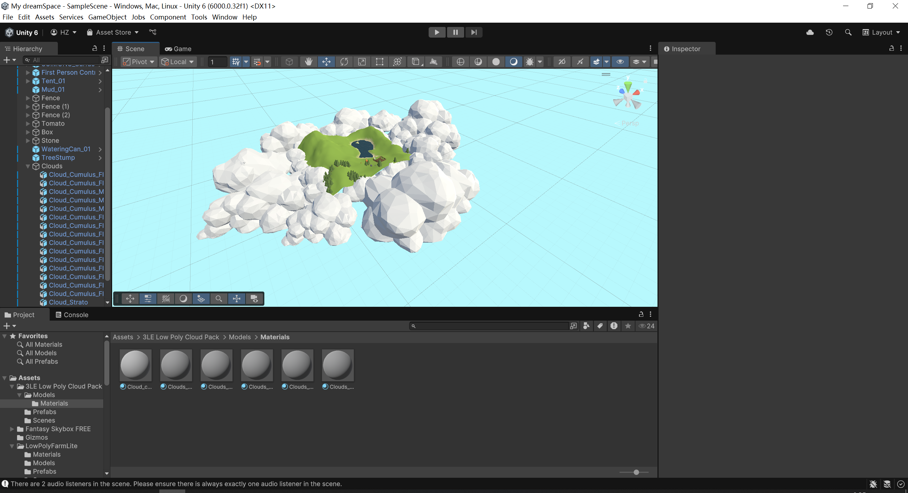
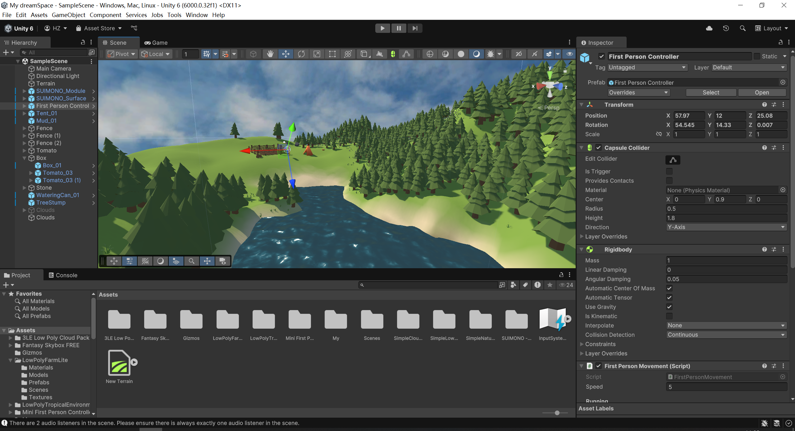

Worldview description: My dreamSpace is a low-poly environment designed to escape the complexities of real life. I created an artificial-looking sky that encloses the space, giving it a sense of a secluded sanctuary, like a hidden retreat away from the ordinary world.
1. I remember I encountered an issue at the beginning. My first-person controller couldn’t go back into the water after coming out. Later, I realized it was simply because I had forgotten to delete one of the layers.
2. Testing different skybox effects.
3. I tried adding some physical clouds, but due to the low-poly style, they ended up looking too much like rocks, so I abandoned the idea.
4. In the end, I chose to use a large spherical sky layer to enclose the virtual space, creating a sense of an isolated utopia.
